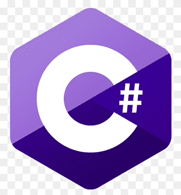

Air Hockey
A semester school project.
The idea was to create a small air hockey table that either
can play by itself autonomously or a player can play against it.
The machine and some components where ready from previous attempts
of other students. It consisted of a raspberry pi 3, 2 Arduino
Mega and a couple of stepper drivers and motors.
I managed to complete the build by wiring everything together,
machining some structural parts, tuning the stepper drivers and motors,
developing the code that allowed it to run and writing the
documentation for the whole project.
The project being completed after many attempts made an impression
to the professor but also it created a fun experience for other the
students as they tried to beat it.


KTEL Planner
While I was a student I used public transport to travel
between my home town and the city where my university is.
I needed to take 2 buses and the task of finding a route that
I didn't need to wait a lot for the next bus on KTEL Macedonia
quickly proved repetitive.
For that reason I wrote a Python script that scrapped the
KTEL Macedonia website, found the itineraries and sorted them by
the waiting time. The first attempt of the app was a terminal
based Python script, but I wanted to make it more accessible
and easy to use. I learned the Flutter framework, wrote the code
again with Dart, designed an easy to use UI and published a completed
app for Android phones on my GitHub. But following the recent news about
Andoird and me wanting to learn web dev, I developed
an Express API and a HTML frontend that I host on Render.
The app proved to be quite useful for the rest of my travels
and also was easy to use as I observed some friends using it.


Android app |
Web app
Brain De Fer
Diploma Thesis
The idea was a game based on two electroencephalograms (EEG) and a
game that represents the players as two characters playing "bras
de fer". Each player would wear an EEG device and compete against each
other using their focusing ability. It was a two person project
consisting of two parts, the data analysis and the game.
My part was to develop the game in Unity. Firstly I needed to find
a way to pass the data from the EEGs devices to C# running in Unity,
then, learn the Unity game engine, find assets for the game, design
an interesting but not attention grabbing UI and implement the logic
and a couple of features for the game.
The completed project created an interesting experience for students
to enjoy and for the university to present on events and fairs.


Game presentation at 87th TIF